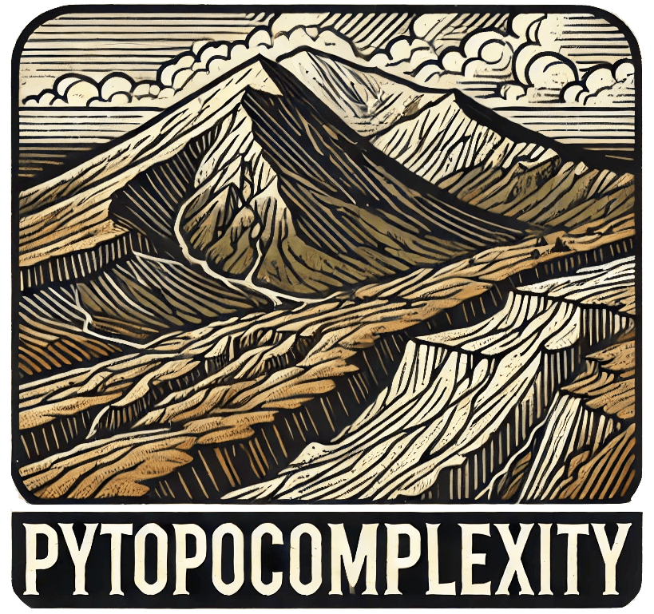
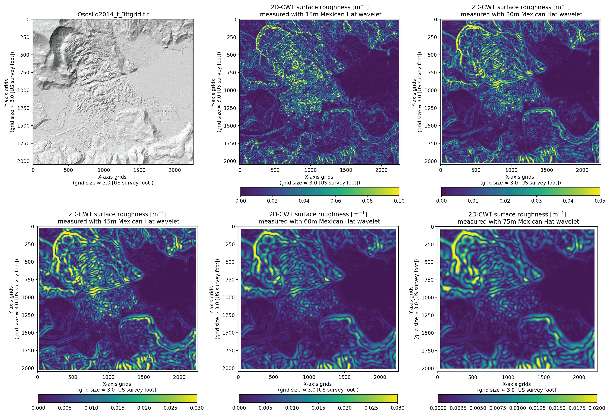
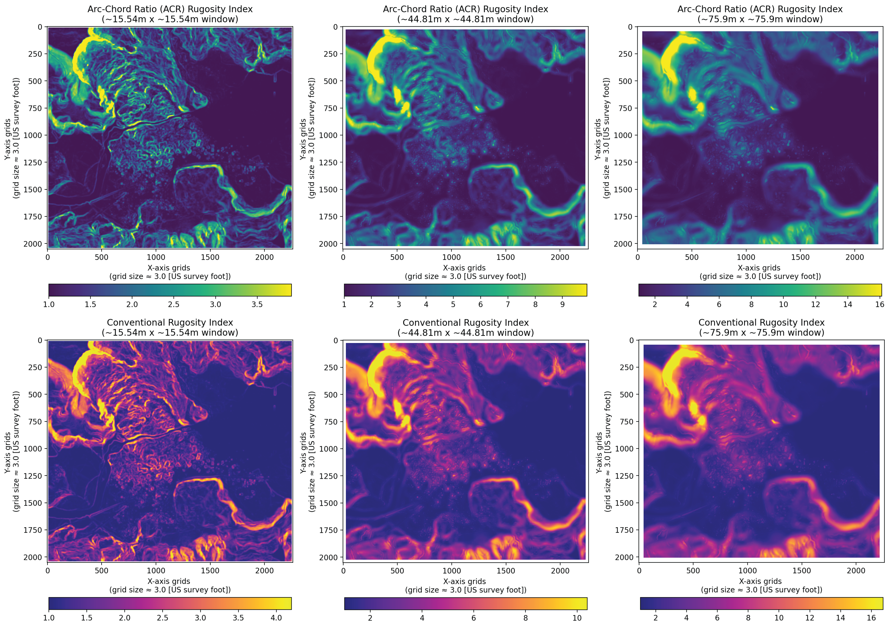
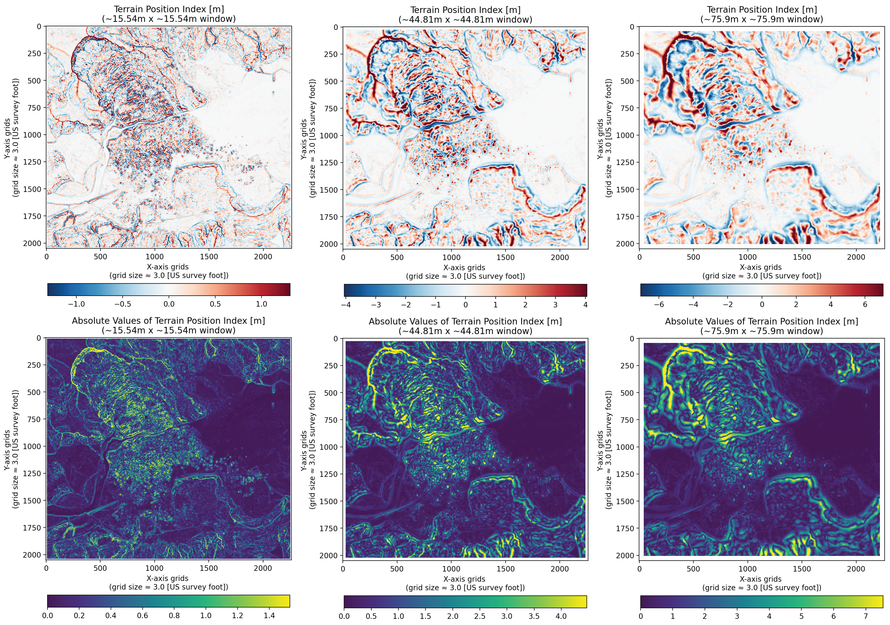
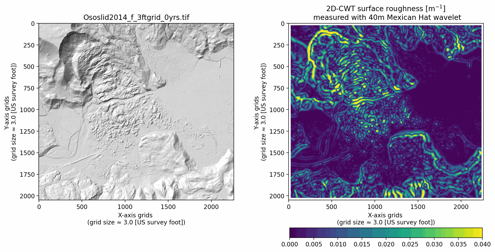

pyTopoComplexity
pyTopoComplexity measures topographic complexity, the roughness of a land surface, from a digital elevation model. It carries four methods used in geology, geomorphology, geography, ecology, and oceanography. Each method has an example notebook, with a short account of the theory and example rasters in ExampleDEM. A separate notebook runs a Landlab landscape forward in time. Another prepares a DEM that has empty cells or mismatched units.
License and citation
The package is under the GNU Affero General Public License 3.0. If you use the package and the notebooks, cite Lai, L. S.-H., Booth, A. M., Duvall, A. R., and Herzig, E. (2025) Short Communication: Multiscale topographic complexity analysis with pyTopoComplexity. Earth Surface Dynamics, 13(3), 417–435, https://doi.org/10.5194/esurf-13-417-2025.
Four methods
- CWTMexHat (
pycwtmexhat.py). Two-dimensional continuous wavelet transform with a Mexican-hat wavelet. The result is a wavelet curvature of the surface. - FracD (
pyfracd.py). Local fractal dimension by a variogram, with the standard error and R² of the fit. - RugosityIndex (
pyrugosity.py). Rugosity of the surface, including a slope-corrected form. - TPI (
pytpi.py). Terrain position index: how high or low a cell sits relative to its neighbors.
Installation
Python 3.10 or newer. Install from PyPI or conda-forge:
pip install pytopocomplexity
conda install pytopocomplexityThe landscape notebook also needs Landlab. The scientific stack is numpy, scipy, rasterio, dask, matplotlib, tqdm, numba, and statsmodels. The example notebooks add pandas, Jupyter, imageio, and GDAL. environment.yml in the repository builds a matching environment.
Wavelet curvature
The Mexican-hat wavelet measures curvature across scales. Booth (2009) used that curvature to pick out and estimate the ages of deep-seated landslide deposits, first in MATLAB. LaHusen et al. (2020) and Herzig et al. (2023) revised that code. In 2024 Larry Syu-Heng Lai, with Alison R. Duvall, rewrote it as this Python module. Import it with from pytopocomplexity import CWTMexHat. The worked example is Example_pycwtmexhat.ipynb.
Fractal dimension
Inside a moving window the surface is cut by four vertical planes, along the principal compass directions, so the problem becomes four profiles. The fractal dimension of each profile comes from a variogram: dissimilarity against distance, fit with a power law. The number does not scale one-for-one with roughness, but smoother surfaces tend to sit closer to 2, and rougher surfaces sit higher. The module also returns the standard error and R². The approach follows Fortran shared by Eulogio Pardo-Igúzquiza (Pardo-Igúzquiza and Dowd, 2022). It has been used to map roughness, classify landforms, and read surface structure on Earth and other bodies. Import it with from pytopocomplexity import FracD. See Example_pyfracd.ipynb.
Rugosity
The rugosity index is the ratio of surface area to plan area. A flat surface scores 1. Without a slope correction (Jenness, 2004) typical values fall between 1 and 3, and steep ground can go higher. The slope-corrected index, the arc-chord ratio of Du Preez (2015), is a cleaner local measure. Marine geologists use it to class the seafloor, oceanographers to look at small-scale flow, and ecologists to estimate habitat. Import it with from pytopocomplexity import RugosityIndex. See Example_pyrugosity.ipynb.
Terrain position index
The terrain position index (Weiss, 2001) is the elevation of a cell minus the mean of its neighborhood. Positive values are high points such as ridges. Negative values are lows such as valleys. Values near zero are flats or even slopes. The absolute value is the size of that contrast, without the sign. The same calculation on bathymetry is the bathymetric position index. Import it with from pytopocomplexity import TPI. See Example_pytpi.ipynb.
Landscape evolution
Landlab_simulation.ipynb drives a Landlab grid and measures complexity at each step. Hillslope smoothing uses TaylorNonLinearDiffuser from terrainbento (Barnhart et al., 2019), the nonlinear diffusion of Roering et al. (1999). Channel incision uses Landlab’s StreamPowerEroder (Braun and Willett, 2013). The notebook writes GeoTIFFs, figures, and an animation of how roughness changes as the surface diffuses and the streams cut.
Example elevation models
The example rasters cover the 2014 Oso landslide and the nearby North Fork Stillaguamish valley, Washington. They were cropped from the Stillaguamish 2014 lidar project (Washington State Department of Transportation), downloaded from the Washington Lidar Portal on 4 April 2024. The set is there so a user can repeat Booth et al. (2017) and compare metrics from other landscapes. Put the whole ExampleDEM folder next to the notebooks. Both the package and the Landlab notebook read grid spacing and feet-or-meters units from the file and report results in SI units.
Ososlid2014_f_3ftgrid.tif— NAD83 Washington South (ftUS), EPSG 2286, 3 ft cells, elevation in feet.Ososlid2014_m_3ftgrid.tif— NAD83 Washington South, EPSG 32149, about 0.91 m cells, elevation in meters.Ososlid2014_f_6ftgrid.tif— EPSG 2286, 6 ft cells, elevation in feet.Ososlid2014_m_6ftgrid.tif— EPSG 32149, about 1.83 m cells, elevation in meters.




